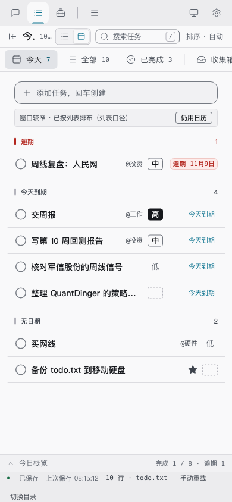
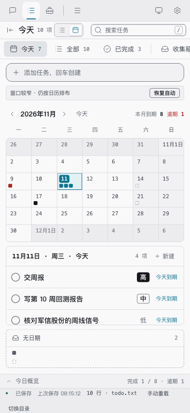
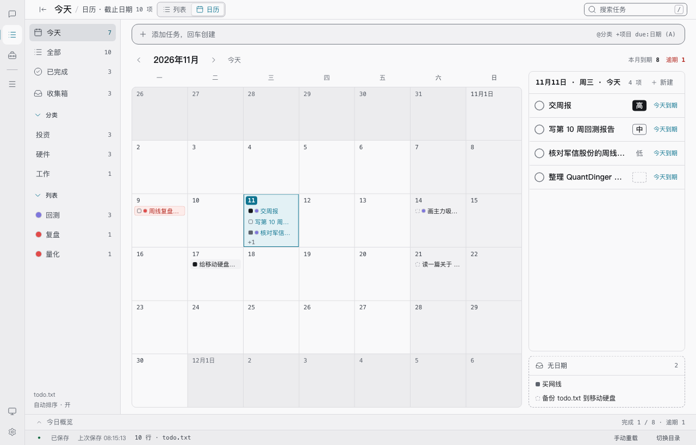

Worktodolist · UI / 2026-11-11
窄边自动降级 · 交付说明
当主区可用宽度不足以有效展示日历时，临时改用列表布局；用户偏好一个字都不改，宽边自动回到原视图，手动选择始终优先。这是 11-10 评估结论里唯一可行的那个版本。
- 用例
- 41 文件 / 743 条
- 浏览器
- settings 40/40
- 响应式
- 40 档 / 575 项
- 阈值
- 进入 480 · 退出 560
- 状态
- 工作树内 · 未提交
01 / 裁决
为什么不是「自动切换模式」
11-10 的评估结论是：按字面实现不可行。显示模式是 configStore 单键的持久化外观偏好（worktodolist.list-mode.v1，两值、默认列表、三处入口订阅同一份），窄边写盘等于把「窗口一时变窄」记成「用户永久选了列表」，宽边也不会自动还原；要还原就得新增「记住原模式」的状态，直接与「一个能力一个键、两值、可清除」的契约相撞。而且三处开关会与画面打架。
所以落地的是渲染层布局覆盖：偏好照旧持久化，另外算出「此刻该用哪种布局」。因为偏好从头到尾没动过，宽边还原是自然结果，不需要任何记忆状态。
用户偏好 preferredMode —— 持久化，三处开关显示它，永不因宽度改写 运行时窄边 narrow —— 主区可用宽度 + 双阈值迟滞，不落盘 本次显式覆盖 override —— 用户在窄边说「仍用日历」，只在本次窄边区间有效 优先级：override > 窄边自动降级 > preferredMode
02 / 边界
四个交互约束的落地答案
| 约束 | 结论 | 依据 |
|---|---|---|
| 触发与恢复 | 以主区可用宽度（不是视口）为准，低于 480 进列表、高于 560 才回日历；恢复宽边自动还原原视图。 | 视口宽不等于主区宽：侧栏折叠、设置页覆盖、对话快照列都会改变它。480 对应 CSS 里「日详情 / 托盘纵摞、chip 退化成 8px 色块」那一档，也就是用户截图里标题被截断、托盘文字读不出的那档。 |
| 手动选择优先级 | 手动 > 自动 > 默认。窄边里点「日历」或提示条的「仍用日历」，本次就用日历；点「列表」或「恢复自动」交回自动判定。 | 显式覆盖是会话内状态，不落盘、不广播；回到宽边自动清空。设置页直接写偏好时也由订阅变化统一同步，三处入口不分叉。 |
| 连续宽度稳定 | 进入 / 退出用不同阈值，480–560 是滞回带，带内保持上一次布局；主区未挂载时保持上一次判定。 | 日历与列表是组件类型不同的三元分支，每次切换都会卸载 / 挂载。临界点反复翻转会丢 DOM 焦点、拖拽改期与滚动位置。 |
| 状态 / 数据 / 体验 | 保留一套、清理一套、提示一套（见 03 节）。 | 取数链口径本就不同，集合与计数会变；这是交付说明 05 节明列「刻意不改的口径」，用可见解释而不是偷偷改取数来化解。 |
03 / 状态
切换时的状态契约
| 类别 | 内容 | 处理 |
|---|---|---|
| 保留 | 选中日与月份（App 顶层派生）、搜索词、侧栏过滤、当前视图、排序模式、侧栏折叠、概览开关 | 不重置。恢复宽边后用户回到原来选中的那一天。 |
| 清理 | QuickAdd 里日历双击预填的 due:YYYY-MM-DD 、日历 chip 选中的 focusedId | 从日历布局切走时清空 + 递增 resetKey。输入栏挂在条件渲染之外不会卸载，不清的话回车就会把那一行写进 todo.txt；清空刻意不抢焦点，键盘用户可能正在侧栏或搜索框。 |
| 自然丢弃 | 日历组件内部的拖拽改期状态、落点预览、网格 DOM 焦点 | 随组件卸载消失。拖放状态本来就不借 store.dragId，不会污染列表的手动排序。 |
| 可见解释 | 任务集合与页眉计数变化 | 提示条写明「已按列表排布（列表口径）」。today 在日历放宽为全部未完成且忽略 t:、已完成按完成日期锚定、页眉两条取数链不同 —— 这些口径一个都没改，只是让用户知道现在按哪一套读。 |
三处模式开关（顶栏 / 应用菜单 / 设置页）显示的仍是用户选的偏好；面包屑、页眉计数、排序按钮、快捷键分派读有效布局。两者之间由提示条连接，不会出现「开关显示日历、画面却是列表」却无人解释的情况。
04 / 改动
改了哪些功能点
| 位置 | 内容 |
|---|---|
lib/layoutMode.js | 新增。阈值常量、hysteresisNarrow 双阈值迟滞、resolveEffectiveMode 三层优先级、noticeState 提示条状态。全部纯函数，不碰 DOM、不读 localStorage。 |
hooks/useLayoutMode.js | 新增。ResizeObserver 观测 <main> 内容盒宽度；窄边状态与显式覆盖都是会话内 state；回到宽边自动清覆盖。 |
components/LayoutNotice.jsx | 新增。降级时的可见解释 +「仍用日历」/「恢复自动」出口。 |
App.jsx | 偏好与有效布局分开：isCalendar、投影、计数、快捷键读有效布局；三处入口仍收偏好。切走时清 QuickAdd 预填与 focusedId。设置页等外部写入通过订阅变化统一同步覆盖态。 |
TopBar.jsx / QuickAdd.jsx | TopBar 新增 effectiveMode 只用于面包屑与排序按钮；QuickAdd 新增 resetKey 用于清空文本且不抢焦点。 |
styleguide.jsx | 新增 ?view=calendar-autonarrow 舞台，与产品走同一套 hook / 提示条；原有 8 个日历档仍强制日历，继续回归日历自身的窄屏降级，语义不变。 |
| 门禁 | qa-settings.mjs 33 → 40 条（新增 7 条降级 / 覆盖 / 还原断言）；qa-responsive.mjs 38 → 40 档（新增 390 降级与 1280 还原两档）。 |
05 / 验证
门禁结果
| 门禁 | 结果 |
|---|---|
npm test / test:guard | 41 文件 / 743 用例，41/41 全部跑到 |
test:ui | css-check 裸值 0 · 110 组对比度 · typography 19/19 · Hook 44 文件 |
test:settings | 40/40（含 7 条新增：自动切列表、提示条、偏好未被改写、面包屑、无溢出、显式覆盖、宽边还原 42 格） |
test:tools / test:nl | 74/74 · 44/44 + 174 词表 |
test:responsive | 40 档 / 575 项，失败 0（新增两档验证降级后的窄屏几何） |
npm run build | 335.69 kB JS，构建通过 |
决策逻辑（迟滞、三层优先级、提示条状态）由 layoutMode.test.js 17 条纯函数用例钉死；可见结果由真实浏览器 computed / DOM 断言钉死。项目没有 jsdom，抽纯函数是既定做法。
06 / 界面
真实界面截图
由 npm run test:settings:shots 生成，已抹掉样式指南外壳。



07 / 边界
已知边界与刻意没做的事
- 768 宽仍是日历：那一档 CSS 已把日详情转成底部横排、chip 收成色块，属于既有降级设计；只有 480 以下才自动切列表。阈值是常量，若以后判定口径要改，改一处即可，但要同步文档与两档 QA。
- 多窗口各自判定：configStore 的广播只在同一 JS 运行时内，没有跨窗口同步；每个窗口按自己的主区宽度算，互不影响。
- 连续宽度变化本身没有浏览器回归：滞回带的稳定性由纯函数单测覆盖；浏览器门禁是逐档独立导航，没有模拟拖窗口。这是当前自动化边界。
- 取数口径没改：today 放宽、已完成按完成日期锚定、页眉两条计数链，全部保持交付说明 05 节的既定取舍，只是加了可见解释。
- 样式指南舞台默认强制日历：8 个日历档继续回归日历自身的窄屏降级；自动降级只在
calendar-autonarrow视图启用。浏览器门禁按既定取舍仍不入 CI。 - 红线没动：纯文本仍是唯一数据源；外观偏好仍不写进
todo.txt；日历仍是「列表的第二种显示模式」而非第四个页签。
状态：本次改动连同 11-10 字体排版、优先级四档、日历补齐、11-07 UI 重做全部仍在工作树里，未提交、未发版；本机 app 仍是 11-10 21:45 那次构建，不含本轮改动，需要时再跑一次 sh build-mac.sh --install。